조선산업기사 (2004-08-08 기출문제)
1과목: 조선공학일반
1. 전부흘수 380cm, 후부흘수 345cm 인 배가 중량물 이동으로 전부흘수는 360cm, 후부흘수는 450cm 로 변화하였다. 새로운 흘수선에 대한 트림은?
- 90cm 선미트림
- 90cm 선수트림
- 20cm 선수트림
- 1⑤cm 선미트림
(정답률: 알수없음)

2. 앵커 체인(anchor chain)은 수 개의 섀클(shackle)이 연결되어 이루어진다. 이 때 한 섀클의 구성에 포함되지 않는 것은?
- 엔드 링크(end link)
- 스위블 링크(swivel link)
- 확대 링크(enlarged link)
- 보통 링크(common link)
(정답률: 알수없음)
3. 수선하의 횡단면적을 길이 방향으로 적분하거나 수선면적을 깊이 방향으로 적분하여 얻을 수 있는 것은?
- 배수용적
- 배수량
- 톤수
- 경하중량
(정답률: 알수없음)
4. 어떤 배를 5m/sec 의 속력으로 예인하였을 때 예인줄 저항이 1500 kgf 이었다면 그 속력에서의 유효마력은?
- 100 PS
- 200 PS
- 300 PS
- 400 PS
(정답률: 알수없음)
5. 산적화물선에서 화물이 한쪽으로 쏠리는 현상을 없애기 위하여 만든 탱크는?
- 톱 사이드 탱크
- 발라스트 탱크
- 연료유 탱크
- 청수 탱크
(정답률: 알수없음)
6. 선박을 정박시킬 때 선수로부터 투하하여 선박이 바람과 조류에 의하여 표류하는 것을 방지하기 위한 의장품은?
- 볼러드
- 페어 리드
- 닻
- 비트
(정답률: 알수없음)
7. 선박의 하역장치가 아닌 것은?
- 카고 슬링
- 윈치
- 윈드라스
- 대릭 붐
(정답률: 알수없음)
8. 선속의 증가와 함께 날개에 가해지는 부양력에 의하여 선체가 수면으로 부터 떠올라 고속으로 항주할 수 있는 선박은?
- 도선
- 수중익선
- 수중작업선
- 호버 크래크트
(정답률: 알수없음)
9. 내연기관에서 기관 바로 밖의 크랭크축 끝에서 계측한 동력은?
- 축동력
- 지시동력
- 제동동력
- 전달동력
(정답률: 알수없음)
10. 길이 45m, 폭 9m, 깊이 8m 인 상자형 선체가 흘수 4 m로 떠 있다. 그림의 A 구획실이 완전 침수 되었다면 그 때의 흘수는?
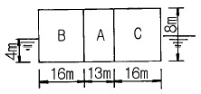
- 3.475 m
- 4.245 m
- 4.785 m
- 5.625 m
(정답률: 알수없음)
11. 아래 그림에 표시된 보트 대빗의 형식은?
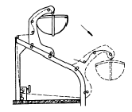
- 쿼드런트 대빗(quadrant davit)
- 중력식 대빗(gravity davit)
- 피봇형 대빗(pivot type davit)
- 회전식 대빗(rotary davit)
(정답률: 알수없음)
12. 다음 건현의 약어 중 동기 북대서양 건현의 약어는?
- S
- W
- WNA
- LWNA
(정답률: 알수없음)
13. 선박에서 발생되는 저항 중 선체표면의 급격한 형상변화 때문에 발생되는 소용돌이로 인한 저항은?
- 마찰저항
- 조파저항
- 조와저항
- 잉여저항
(정답률: 알수없음)
14. 저속선에서 가장 큰 비중을 차지하는 저항은?
- 조파저항
- 조와저항
- 마찰저항
- 공기저항
(정답률: 알수없음)
15. 경두선에 대한 설명으로 틀린 것은?
- 무게 중심이 낮다.
- 복원력이 크다.
- 동요주기가 짧다.
- 승선감이 좋다.
(정답률: 알수없음)
16. 스크류 프로펠러가 1회전 하는 동안 전진하는 거리는?
- 피치(pitch)
- 경사(rake)
- 스큐 백(skew back)
- 슬립(slip)
(정답률: 알수없음)
17. 선박의 속력을 측정하는데 사용되는 기구는?
- 자이로 컴퍼스(gyro compass)
- 압력 로그(pressure log)
- 로런(loran)
- 음향 측정기(echo sounder)
(정답률: 알수없음)
18. 선박의 메타센터 반경(BM)에 관한 설명 중 틀린 것은?
- 방형계수(CB)가 작을수록 크다.
- 동일 선박에서 흘수가 작을수록 크다.
- 동일 선박에서 만재흘수 상태일 때 가장 크다.
- 오프 셋(off-sets)을 이용하여 구할 수 있다.
(정답률: 알수없음)
19. 자항력이 없는 부선(barge)을 끌거나 내항에서 대형 선박을 끄는데 사용되는 선박은?
- 도선(ferry boat)
- 예인선(tug boat)
- 모터 보트(motor boat)
- 순시선(patrol craft)
(정답률: 알수없음)
20. 선박의 수선면 및 횡단면 형상의 곡선을 2차 포물선의 일부라고 가정하고 면적을 구하는 근사계산법칙은?
- 사다리꼴 법칙
- 심프슨 제 2법칙
- 웨들 법칙
- 심프슨 제 1법칙
(정답률: 알수없음)
2과목: 조선유체역학 및 재료역학
21. 그림에서 평면 도형의 도심 C를 지나는 X축에 대한 단면 2차모멘트를 Ix, X축으로부터 거리
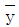
만큼 평행하게 떨어진 X'축에 대한 단면 2차모멘트를 Ix'라 할 때 다음 중 옳은 것은? (단, 평면도형의 전체 면적은 A이다.)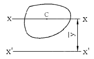
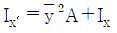
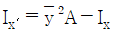
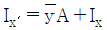
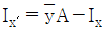
(정답률: 알수없음)
22. 원형단면 축에 저장되는 변형 에너지를 나타내는 식은? (단, T는 비틀림모멘트, G는 전단 탄성계수, ø는 단위 길이당 비틀림각, J는 극관성모멘트, L은 축의 길이이다.)
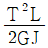
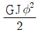
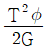
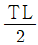
(정답률: 알수없음)
23. 유체 흐름에서 레이놀드(Reynolds)수란?
- 관성력/점성력
- 관성력/압력
- 관성력/중력
- 관성력/탄성력
(정답률: 알수없음)
24. 재료의 기계적 성질을 나타내는 것 중에는 탄성한도, 변형률, 극한강도 등이 있다. 이러한 성질들을 알기 위한 재료시험으로 가장 적합한 것은?
- 압축시험
- 인장시험
- 피로시험
- 충격시험
(정답률: 알수없음)
25. 바깥지름 5 ㎝, 안지름 2㎝, 길이 3m의 중공기둥의 세장비는 약 얼마인가?
- 158
- 183
- 223
- 298
(정답률: 알수없음)
26. 선체 표면에 작용하는 마찰력을 무차원화한 계수가 마찰계수이다. 축척비 1:100 의 모형선에 적용하는 마찰계수는 실선에 적용하는 마찰계수에 비하여 어떠한가?
- 적다.
- 크다.
- 똑 같다.
- 비슷하다.
(정답률: 알수없음)
27. 그림과 같이 지름 40mm 인 분류가 60 m/s 의 속도로 고정평판에 45° 의 각을 이루고 충돌할 때 판이 받는 힘은?
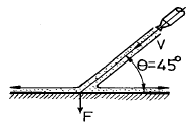
- 2332 N
- 3199 N
- 3185 N
- 4528 N
(정답률: 알수없음)
28. 어떤 액체가 지름 200mm 인 수평원관 속을 흐르고 있다. 관벽에서 전단응력이 150 Pa 이고, 관의 길이가 30m 일 때 압력강하(ΔP)는?
- 750 kPa
- 80 kPa
- 90 kPa
- 100 kPa
(정답률: 알수없음)
29. 단면의 크기가 같고 재질이 같은 그림 (a), (b) 두 외팔보의 자유단에 최대 처짐량이 같게 되려면 집중하중의 크기 P2는 P1에 몇 배 인가?
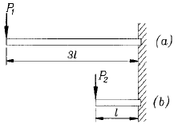
- 3
- 9
- 18
- 27
(정답률: 알수없음)
30. 유동하는 물의 속도가 10 m/s 이다. 이때 전수두가 15 m라면 수력구배선의 높이는?
- 9.0 m
- 9.2 m
- 9.6 m
- 9.9 m
(정답률: 알수없음)
31. 다음 중 유량을 측정할 때 사용되는 장치는?
- 다이나모미터(dynamometer)
- 벤츄리미터(venturimeter)
- 열선 아네모미터(hot-wire anemometer)
- 피에조미터(piezometer)
(정답률: 알수없음)
32. 단면 30 ㎝2인 균일 원형 단면봉에 인장하중 300 kN이 작용하고 있다. 임의의 서로 직교하는 두 경사면 위에 작용하는 수직응력들의 합은 몇 MPa인가?
- 50
- 80
- 90
- 100
(정답률: 알수없음)
33. 체적이 5 m3, 무게가 37240 N 인 기름의 비중은?
- 0.76
- 0.78
- 0.8
- 0.85
(정답률: 알수없음)
34. 어떤 물체의 공기중에서의 무게는 490 N 이고, 물속에서의 무게는 98 N 이었다. 이 물체의 체적은?
- 0.06 m3
- 0.04 m3
- 0.⑤ m3
- 0.01 m3
(정답률: 알수없음)
35. 길이 10 m, 단면적 10 ㎝2의 철강봉을 50 kN으로 인장하여 0.25 ㎝ 늘어났다. 이 재료의 탄성계수 E는 몇 GPa인가?
- 210
- 200
- 215
- 220
(정답률: 알수없음)
36. 그림과 같은 단순보에서 A지점의 반력이 50 kN이 되기 위해서는 x는 몇 m인가?
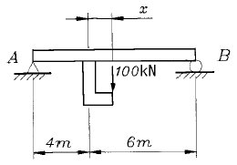
- 0.5
- 1
- 1.5
- 2
(정답률: 알수없음)
37. 원형 단면보에 같은 전단력이 작용할 때 원형 단면보의 지름을 3배로 하면 최대 전단응력은 몇 배나 되는가?
- 9
- 3
- 1/3
- 1/9
(정답률: 알수없음)
38. 배가 물 위에 떠있을 때 이 배의 배수량과 관계가 없는 것은?
- 부력
- 배의 무게
- 물의 비중량 × 배수 체적
- 가로메타센터 높이 × 배의 경사각
(정답률: 알수없음)
39. 그림과 같은 분포하중을 받는 단순보에서 B지점에서의 하중의 세기 q는 몇 N/m인가?
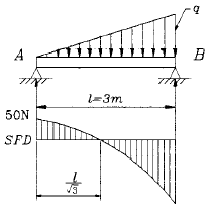
- 50
- 75
- 100
- 150
(정답률: 알수없음)
40. 관 속을 유체가 흐를 때 관마찰계수 f 는?
- 레이놀드수와 상대조도와의 함수가 된다.
- 마하수와 코시수의 함수가 된다.
- 상대조도와 오일러수의 함수가 된다.
- 언제나 레이놀드수만의 함수가 된다.
(정답률: 알수없음)
3과목: 선체구조학
41. 선체구조양식은 선체구조 부재 중 어떤 부재의 배치 방식에 따라 결정되는가?
- 필러(pillar)
- 뼈대(stiffener)
- 선수재(stem)
- 용골(keel)
(정답률: 알수없음)
42. 선체 이중저(double bottom)에 대한 설명으로 틀린 것은?
- 선저파손 시 상부로의 해수 침입을 막을 수 있다.
- 선체 종강도가 증가한다.
- 청수탱크, 연료유 탱크 등으로 사용할 수 있다.
- 구조가 간단하여 소형선에만 주로 적용된다.
(정답률: 알수없음)
43. 선박의 선수부에 위치하는 구조물이 아닌 것은?
- 체인 로커(chain locker)
- 벨 마우스(bell mouth)
- 축 지주(shaft strut)
- 호저 파이프(hawser pipe)
(정답률: 알수없음)
44. 선박의 길이 방향으로 선체중량 분포상태를 곡선으로 나타낸 것은?
- 중량곡선
- 부력곡선
- 하중곡선
- 전단력곡선
(정답률: 알수없음)
45. 선박의 종강도 계산을 위한 표준파의 조건에서 파고와 파장의 비는?
- 1/10
- 1/20
- 1/30
- 1/40
(정답률: 알수없음)
46. 갑판 보(beam)의 치수 결정 요인이 될 수 없는 것은?
- 보 지점간의 거리
- 갑판 하중의 크기
- 필러(pillar)의 크기
- 보 간격(space)
(정답률: 알수없음)
47. 강력갑판 아래에 있는 갑판으로 선체 종강도의 구성부재가 되는 갑판은?
- 유효갑판
- 유보갑판
- 선루갑판
- 건현갑판
(정답률: 알수없음)
48. 갑판 위에 기중기와 윈드라스(windlass) 등 갑판기기가 설치되는 곳은 국부 집중하중에 대한 보강이 필요하다. 다음 중 집중하중에 대한 보강방법과 거리가 먼 것은?
- 기기 주위에 코밍을 설치한다.
- 기기설치 갑판하에 필러를 설치한다.
- 기기설치 부근 갑판에 겹판을 붙인다.
- 기기설치 부근 갑판의 부재치수를 증가시킨다.
(정답률: 알수없음)
49. 화물선에서 화물의 적재나 하역을 위하여 설치하는 갑판개구(開口)는?
- 해치(hatch)
- 코밍(coaming)
- 캠버(camber)
- 갑판 거더(deck girder)
(정답률: 알수없음)
50. 평판용골(plate keel)의 판 두께는 주위의 선저 외판두께와 비교하여 어떻게 설정하는가?
- 같은 두께로 설정한다.
- 더 얇게 설정한다.
- 더 두껍게 설정한다.
- 선수미부에서는 더 두껍게 하고, 중앙부는 같은 두께로 설정한다.
(정답률: 알수없음)
51. 선체 구조에서 응력집중을 방지하기 위한 대책으로 잘못된 것은?
- 원형 구멍은 사각형 구멍으로 바꾼다.
- 구멍 주위에 보강환을 붙인다.
- 구조부재의 단면적의 불연속을 피한다.
- 구멍의 위치를 부재의 중립축 근처로 옮긴다.
(정답률: 알수없음)
52. 선박 구조형식 중 종식 구조의 장점이 아닌 것은?
- 종강도가 강하다.
- 선체의 중량이 가볍다.
- 재화중량이 증가한다.
- 특히 선수미부의 구조가 간단하다.
(정답률: 알수없음)
53. 다음 중 수밀 횡격벽의 중요한 역할이 아닌 것은?
- 인접하는 구획의 침수를 방지한다.
- 선체의 종강도를 높이고 국부하중을 지지한다.
- 화재가 다른 구획으로 번지는 것을 지연시킨다.
- 화물의 적재 및 하역에 편리를 도모할 수 있다.
(정답률: 알수없음)
54. 선체 세로굽힘모멘트에 의한 굽힘응력은 선체횡단면의 중립축에서 어떤 값인가?
- 최대값
- 최대값의 1/2
- 0
- 최대값의 1/4
(정답률: 알수없음)
55. 파랑의 파정이 선체의 선수미부 양단에 위치하여 갑판에는 압축응력이 선저 중앙부 외판에는 인장응력이 크게 작용하는 상태는?
- 호깅 상태
- 새깅 상태
- 비틀림 상태
- 래킹 상태
(정답률: 알수없음)
56. 선박 갑판 창구 모서리에 연재(coaming)를 설치하는 가장 큰 이유는?
- 공작을 쉽게 하기 위하여
- 화물창의 통풍을 위하여
- 갑판을 보강하여 국부강도를 증가시키기 위하여
- 선원의 안전을 위하여
(정답률: 알수없음)
57. 선체 이중저 내에 코퍼댐(cofferdam)을 설치하는 목적은?
- 추진축이 지나가는 통로를 확보하고 축을 보호하기 위하여
- 연료유 탱크와 윤활유 탱크 사이 및 이들과 청수 탱크의 각 성분이 서로 혼합되는 것을 방지하기 위하여
- 화물의 적재량을 증가시키고, 선박의 부심을 낮추어 복원력을 증대시키기 위하여
- 선저부의 국부강도를 증대시키고, 선저 파손 시 해수의 침입을 방지하기 위하여
(정답률: 알수없음)
58. 갑판상에 불워크(bulwark)를 설치하는 목적과 가장 무관한 것은?
- 폭로된 상갑판으로의 파도의 침범을 막는다.
- 갑판위의 통행을 안전하게 한다.
- 창구 등의 갑판구를 보호한다.
- 화물창내의 화물을 보호한다.
(정답률: 알수없음)
59. 빌지 킬(bilge keel)이 부착되는 곳은?
- 만곡부 외판
- 선저외판
- 선측외판
- 내저판
(정답률: 알수없음)
60. 늑골 간격(frame space)이란?
- 한 늑골의 중심에서 다음 늑골의 중심까지
- 한 늑골의 앞면에서 다음 늑골의 배면까지
- 한 늑골의 배면에서 다음 늑골의 배면까지
- 한 늑골의 배면에서 다음 늑골의 앞면까지
(정답률: 알수없음)
4과목: 선박건조학 및 선박동력장치
61. 선행의장 방식의 가장 중요한 잇점은?
- 의장공사의 능율화로 건조공기가 단축됨
- 의장공사의 품질관리가 용이함
- 의장공사의 공기 단축으로 선대회전율이 향상됨
- 고소작업의 감축으로 안전사고를 방지함
(정답률: 알수없음)
62. 크랭크 축의 비틀림 진동이 축 자체의 고유 자연진동수와 일치하면 공진을 일으켜 진동이 더 커지게 되는데, 이 때의 기관 회전수를 무엇이라 하는가?
- 저속도 회전수
- 과속도 회전수
- 공진 회전수
- 위험 회전수
(정답률: 알수없음)
63. 조선소의 해안이 1변인 경우에 적합한 공장배치 형태는?
- I형
- L형
- U형
- T형
(정답률: 알수없음)
64. 다음의 선박 건조방식 중에서 선수미의 코킹 업(cocking up)이 비교적 많이 일어날 우려가 있는 것은?
- 상형건조법
- 층식건조법
- 압출식건조법
- 피라밋식건조법
(정답률: 알수없음)
65. 어떤 디젤기관의 기계효율이 80 % 이며, 이때의 지시마력이 100 PS 였다면 마찰손실 마력은?
- 30 PS
- 20 PS
- 10 PS
- 5 PS
(정답률: 알수없음)
66. 조선 재료의 재고량 표시법 중 런닝 스토크란?
- 출고되어 사용중인 것과 동일한 재료
- 출고가 임박한 재료
- 계획이 변경될 때 대응이 불가능한 재료
- 계획이 변경될 때 대응이 가능한 재료
(정답률: 알수없음)
67. 암(arm) 길이가 0.75 m 인 전기동력계로 디젤기관의 동력을 측정하였다. 회전수 400 rpm 에서 하중이 30 kgf 일 경우 제동마력은?
- 7.88 PS
- 8.92 PS
- 12.56 PS
- 15.72 PS
(정답률: 알수없음)
68. 어떤 디젤기관의 간극체적이 40 cc, 행정체적이 200 cc 일 때 이 기관의 압축비는?
- 6
- 7
- 8
- 9
(정답률: 알수없음)
69. 프로펠러 추진기의 참슬립(real slip)에 대한 설명으로 틀린 것은?
- 프로펠러의 속도를 배의 속도로 나눈 값이다.
- 참슬립은 겉보기 슬립보다 항상 크다.
- 참슬립은 음(-)의 값이 되지 않는다.
- 프로펠러의 회전수가 증가하면 참슬립은 증가한다.
(정답률: 알수없음)
70. 소규모 조선소에서 진수와 상가에 쓰이는 경사선대 진수대는?
- 롤러식
- 대차식
- 볼식
- 수지식
(정답률: 알수없음)
71. 용접순서의 일반적인 원칙에 어긋나는 것은?
- 용접에 의한 수축은 항상 자유단에서 발생하도록 한다.
- 판용접일 경우에는 가로 이음새(butt)를 먼저 용접한다.
- 수축량이 적은 것부터 큰 순서로 용접한다.
- 맞대기 용접과 필릿용접이 교차할 때에는 맞대기 용접을 먼저 한다.
(정답률: 알수없음)
72. 내업공장의 기계 배치에 대한 설명으로 틀린 것은?
- 가공 순으로 직선적 배치
- 작업면적을 고려하여 배치
- 기계의 사용빈도와 가동율을 고려하여 배치
- 기계의 점유면적 순으로 지그재그 형태로 배치
(정답률: 알수없음)
73. 주기(main engine)와 프로펠러의 연결 시스템에 있어서 축계의 선수쪽 끝단에서 측정되는 마력은?
- I.H.P(도시마력)
- B.H.P(제동마력)
- D.H.P(전달마력)
- E.H.P(유효마력)
(정답률: 알수없음)
74. 가공별로 분류한 마킹 작업의 종류에 속하지 않는 것은?
- 다듬질 마킹
- 사진 마킹
- 윤곽잡기 마킹
- 블록 마킹
(정답률: 알수없음)
75. 내연기관의 기준 사이클이 아닌 것은?
- 오토 사이클
- 디젤 사이클
- 사바테 사이클
- 랭킨 사이클
(정답률: 알수없음)
76. 가변 피치 프로펠러의 특징이 아닌 것은?
- 클러치 및 역전장치가 있어야 한다.
- 선교에서 원격 조정이 가능하다.
- 주기관과 프로펠러 축의 회전 방향은 항상 일정하다.
- 주기관으로부터 발전기 운전이 가능하다.
(정답률: 알수없음)
77. 가솔린기관에 비하여 디젤기관은 압축비가 높은데 그 이유는?
- 공기의 점성계수를 낮게하여 연료분사가 용이하게 하려고
- 연소실내의 잔류가스를 잘 배출하여 충전효율을 높이려고
- 공기 온도를 높여 연료의 착화를 용이하게 하기 위하여
- 각 실린더마다 고른 출력을 얻기 위하여
(정답률: 알수없음)
78. 다음 중 디젤기관의 고정부분이 아닌 것은?
- 피스톤
- 실린더
- 베드
- 프레임
(정답률: 알수없음)
79. 판두께는 19 mm인 선각외판을 자동용접으로 용접하고자 한다. 다음 중 가장 적합한 개선형상은?
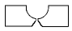
(정답률: 알수없음)
80. 선형결정짓기를 위한 기준선으로 부적합한 것은?
- 종단면선(buttock line)
- 선체 중심선(center line)
- 흘수선(draft line)
- 늑골선(frame line)
(정답률: 알수없음)
새로운 전부흘수는 이전보다 작아졌으므로, 배의 앞쪽이 더 무거워졌다. 따라서, 배의 앞쪽에 더 많은 중량물을 싣거나, 후부에 더 많은 물을 배출하여 트림을 맞춰야 한다. 이 경우, 전부흘수는 20cm 선수트림 되어야 하고, 후부흘수는 90cm 선미트림 되어야 한다. 따라서, 새로운 흘수선에 대한 트림은 "90cm 선미트림"이 된다.